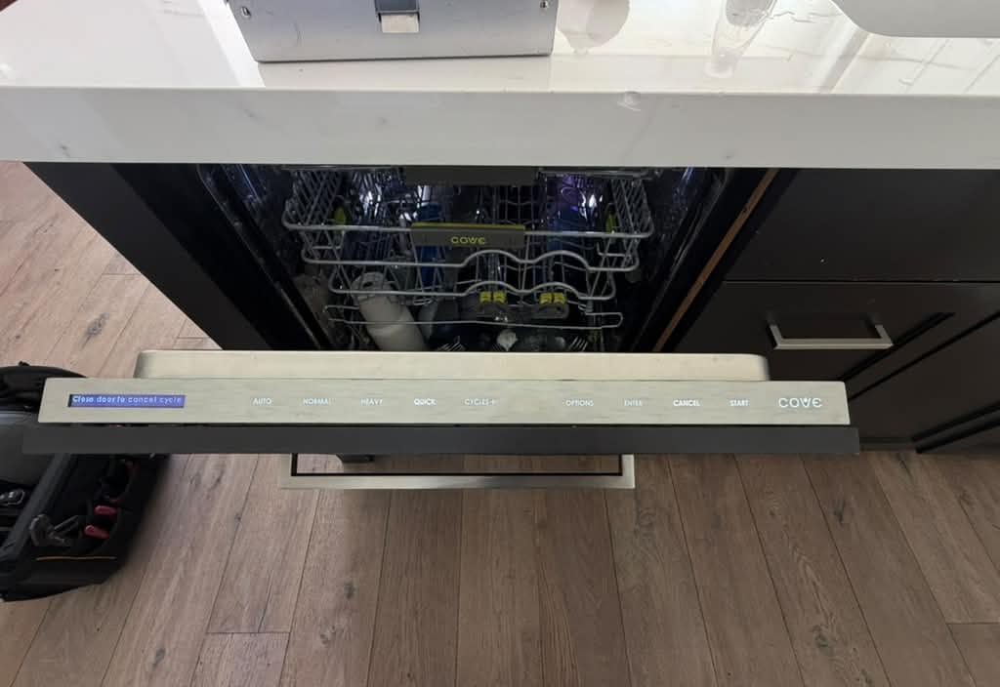
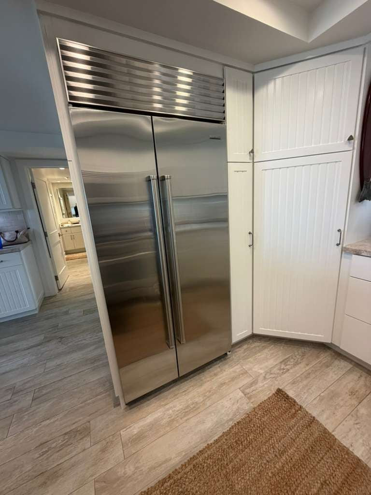
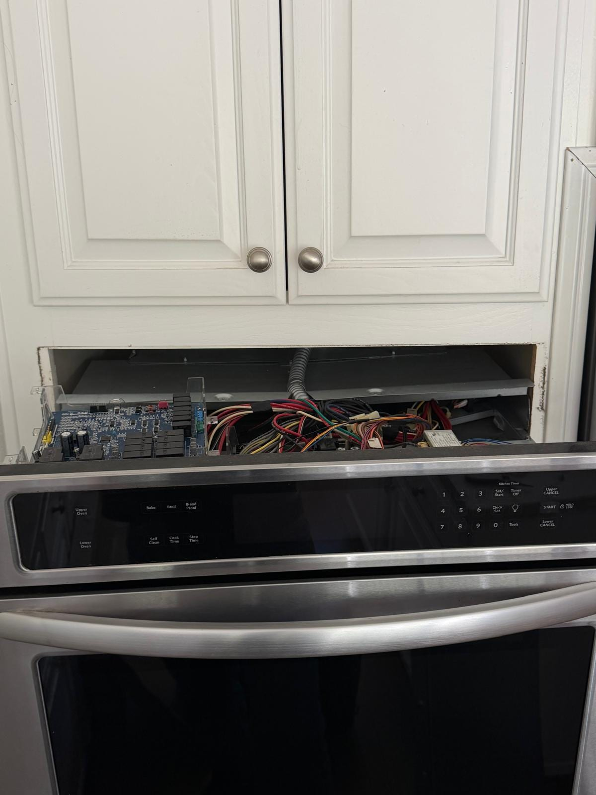
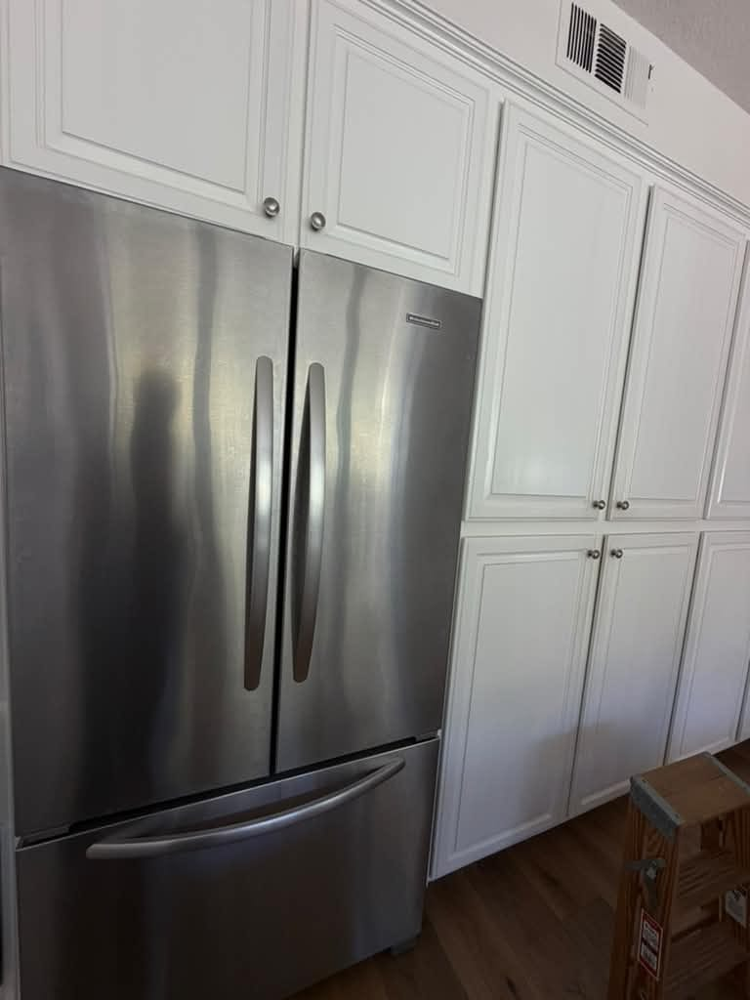
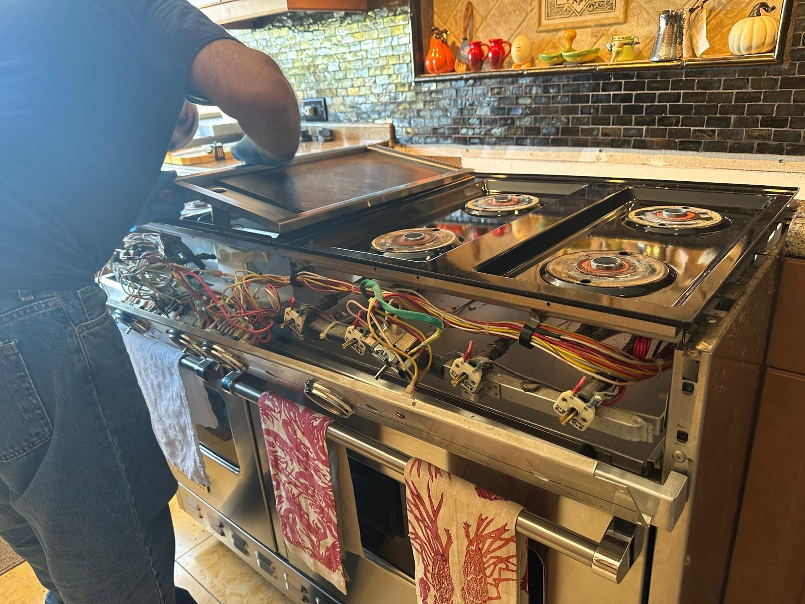

Appliance Repair in San Clemente, CA
Serving Talega, Forster Ranch, Marblehead, the Pier Bowl, and all of coastal south Orange County. Same-day service. Licensed and insured.
5.0 · 160 Google reviewsMon–Sat, 8am–7pm. Two-hour arrival window. The technician calls before arriving.
See neighborhoods and ZIP codes
What to expect
- Flat $99 diagnostic feeApplied toward the repair if you approve the work.
- Written quote firstItemized, before any work starts.
- 90-day parts, 30-day laborWarranty on every repair.
- Same-day serviceCall or request online.
Family-owned since 2017 · Licensed, bonded & insured
Recent Repairs in San Clemente
Four real jobs completed by our technicians in San Clemente homes.



What Our Customers Say
From our 160 verified 5-star Google reviews
Absolutely amazing service! Timely, cost was right, knowledgeable, great customer experience! Definitely will be using them again! Thank you! Dryer is back in action!
AG showed up on time and instantly knew what the problem was. This was the second time he has been to our house and each time he has done a good job for us.
AG was great. He repaired my dryer, moved it, cleaned it out, and showed me exactly what was causing the issue. He was clear and informative. I would recommend him again!
Services We Offer in San Clemente
From refrigerators and wine coolers to washers and disposals, we repair every major home appliance. Each service links to its full Orange County hub page with brand coverage and common symptoms.
Request
Call (949) 629-5365 or submit the online form. Tell us the appliance type, brand, and the symptom you are seeing.Diagnose
Your technician arrives at a scheduled window by way of Interstate 5 and El Camino Real, then runs a full diagnostic.Quote
You receive a firm, transparent quote before any work begins. No hidden fees. You decide whether to proceed.Repair + Warranty
Most repairs are completed in one visit. All work carries a 90-day parts and 30-day labor warranty.
Pricing & Discounts
- $99 diagnostic fee, applied toward your repair
- 20% off labor for seniors 60+ & repeat customers
Estimates vary by brand, part availability, and diagnosis. Final quote is provided before repair. Full pricing guide
San Clemente Neighborhoods We Serve
San Clemente is a coastal city at the south end of Orange County, known for its Spanish Village by the Sea architecture and a mix of hillside estates and older beach homes. We cover every neighborhood across ZIP codes 92672, 92673, and 92674, with no travel surcharges.
-
Talega
ZIP 92673Master-planned hillside community on the inland side. High concentration of built-in and luxury kitchen appliances.
-
Forster Ranch
ZIP 92672 · 92673Large family neighborhood west of Interstate 5. A mix of production and custom homes with full-size laundry and kitchens.
-
Rancho San Clemente
ZIP 92672Hillside community with canyon and ocean views near the business park. Frequent built-in refrigerator and oven service.
-
Marblehead
ZIP 92673Bluff-top neighborhood near the Outlets at San Clemente. Premium kitchens with Sub-Zero and Wolf are common here.
-
Sea Pointe Estates
ZIP 92673Guard-gated hillside community with ocean views. Built-in luxury appliances and wine coolers are standard.
-
Southwest San Clemente
ZIP 92672Classic beach neighborhood near T-Street and the pier. Older cottages, remodels, and salt-air corrosion repairs.
-
Coast District & Pier Bowl
ZIP 92672Walkable area around the San Clemente Pier and Avenida Del Mar. Condos, rentals, and second homes near the water.
-
Capistrano Shores
ZIP 92672Beachfront community along North Beach. We service compact and manufactured-home laundry and kitchen units here.
-
North Beach
ZIP 92672Historic district near the Metrolink station and Casa Romántica. A range of appliance brands across older and updated homes.
About San Clemente
San Clemente sits at the southern tip of Orange County, bordering Laguna Niguel, Mission Viejo, Dana Point, and San Juan Capistrano to the north and the San Diego County line to the south. Founded in the 1920s as a Spanish Village by the Sea, the city keeps its red-tile, white-stucco character from the hillside estates of Talega down to the cottages near the water. Locals walk the San Clemente Pier, surf T-Street Beach and San Clemente State Beach, take in a show at Casa Romántica Cultural Center, and shop the Outlets at San Clemente near Marblehead. That blend of luxury hillside kitchens and salt-exposed beach homes is exactly the range of Sub-Zero, Wolf, Thermador, and everyday Whirlpool and LG work we handle here week to week.
Common Appliance Problems We Fix
Most repairs are finished in a single visit. These are the symptoms we diagnose every day across San Clemente.
- Refrigerator not cooling or running warm
- Garage fridge or freezer corroding from salt air
- Wine cooler not holding its set temperature
- Washer not draining or leaving clothes soaked
- Dryer taking two cycles to finish a load
- Dishwasher not cleaning or leaving standing water
- Oven not heating or Wolf range burner not lighting
- Thermador cooktop with no spark or uneven flame
- Freezer warm while the fridge section stays cold
- Garbage disposal humming but not spinning
- Built-in Sub-Zero making a loud or rattling noise
- Viking or Miele oven showing an error code
Brands we repair
San Clemente's hillside estates in Talega, Sea Pointe, and Marblehead carry a higher share of built-in luxury appliances than most Orange County cities. We lead with premium brands and service everything down to standard residential units. We also service GE Monogram, Dacor and DCS.
- Sub-Zero
- Wolf
- Samsung
- LG
- Whirlpool
- GE
- Maytag
- Frigidaire
- Bosch
- KitchenAid
- Kenmore
- Miele
- Thermador
- Viking
- Electrolux
Independent repair service. Not affiliated with or endorsed by these manufacturers; brand names and logos are trademarks of their owners. If your appliance is still under manufacturer warranty, check with the manufacturer before booking.
Appliance repair across San Clemente
Universal Appliances Repair Group Inc. provides appliance repair in San Clemente, CA, for refrigerators, washers, dryers, dishwashers, ovens, stoves, freezers, garbage disposals, and wine coolers. We cover Talega, Forster Ranch, Rancho San Clemente, Marblehead, Sea Pointe Estates, and the Pier Bowl and Coast District neighborhoods, across ZIP codes 92672, 92673, and 92674.
Same-day and next-day appointments are usually available. We also serve nearby Dana Point, San Juan Capistrano, Laguna Niguel, and Mission Viejo. Call (949) 629-5365 or book online.
FAQ: San Clemente Appliance Repair
Still have a question? Call (949) 629-5365.
Yes. Same-day appliance repair is available in San Clemente when you call before noon. Technicians reach most addresses by way of Interstate 5 and El Camino Real, from Talega down to the Pier Bowl. Call (949) 629-5365 to confirm same-day availability for your street.
We cover all of San Clemente across ZIP codes 92672, 92673, and 92674, including Talega, Forster Ranch, Rancho San Clemente, Marblehead, Sea Pointe Estates, Southwest San Clemente, the Coast District, Capistrano Shores, and the Pier Bowl. There are no travel surcharges for any San Clemente address.
It can. Homes near the beach and along the Coast District see salt air speed up corrosion on garage refrigerators, outdoor freezers, washer and dryer cabinets, and exposed metal components. We clean and treat affected parts, replace rusted hardware, and can advise on placement to slow future wear.
Yes. We service older beach cottages, condos, and second homes throughout the Pier Bowl, North Beach, and Capistrano Shores. Let us know about parking or stair access when you book and the technician will plan the visit around it.
Yes. All repairs carry a 90-day parts and 30-day labor warranty. If the same issue returns within 30 days, we come back and fix it at no additional charge; replaced parts stay covered for 90 days. Your technician will go over the specific warranty terms when they provide the quote, before any work begins.
Need Appliance Repair in San Clemente?
Same-day service available in Talega, Forster Ranch, Marblehead, the Pier Bowl, and all of San Clemente. Licensed technicians, 90-day parts / 30-day labor warranty on every repair.
Call (949) 629-5365
Request a Repair
Mon–Sat, 8am–7pm